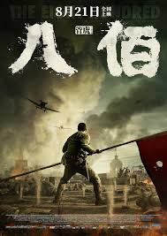

Inception
Dom Cobb (Leonardo DiCaprio) is a thief with the rare ability to enter people's dreams and steal their secrets from their subconscious. His skill has made him a hot commodity in the world of corporate espionage but has also cost him everything he loves. Cobb gets a chance at redemption when he is offered a seemingly impossible task: Plant an idea in someone's mind. If he succeeds, it will be the perfect crime, but a dangerous enemy anticipates Cobb's every move.
____________________________________________________________________________________

Avengers Endgame
Clint Barton, under house-arrest, is teaching his daughter archery during a family picnic. Suddenly, she and the rest of his family are turned to ash as a result of the Snap from the last film. Meanwhile, Tony Stark and Nebula are stranded in space on the Benatar, orbiting Titan, after their defeat by Thanos, with life support running low. Captain Marvel rescues them, and brings the ship to the New Avengers Facility, where the surviving Avengers from the battle of Wakanda are residing. They greet Tony, and the team laments on what was lost, before formulating a plan to steal the Infinity Stones back from Thanos and use them to reverse his actions. Despite Rhodey's pleas for Tony to sit back down in his wheelchair, Tony goes up against Steve and foolishly blames him for Thanos' snap even though it wasn't his fault before angrily taking his heart out of his chest, giving it to Steve, and collapses on the floor in the process.
____________________________________________________________________________________
The Eight Hundred
During the early days of the Second Sino-Japanese War, and on a greater scale World War II, the Imperial Japanese Army invaded Shanghai in what became known as the Battle of Shanghai. After holding back the Japanese for over 3 months, and suffering heavy losses, the Chinese army was forced to retreat due to the danger of being encircled. Lieutenant Colonel Xie Jinyuan of the 524th Regiment of the under-equipped 88th Division of the National Revolutionary Army, led 452 young officers and soldiers to defend Sihang Warehouse against the 3rd Imperial Japanese Division consisting of around 20,000 troops on a heroic suicidal last stand against the Japanese under an order by Generalissimo of Nationalist China, Chiang Kai-shek. The decision was made to provide a morale boost to the Chinese people after the losses of Beijing and Shanghai, and helped spur support from the Western powers, who were in full view of the battle from the International Settlement in Shanghai just across the Suzhou Creek.